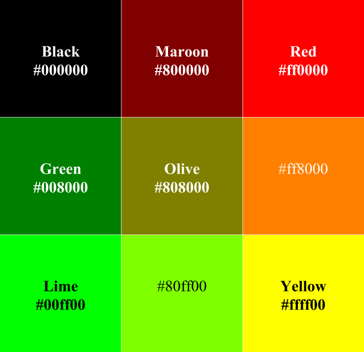
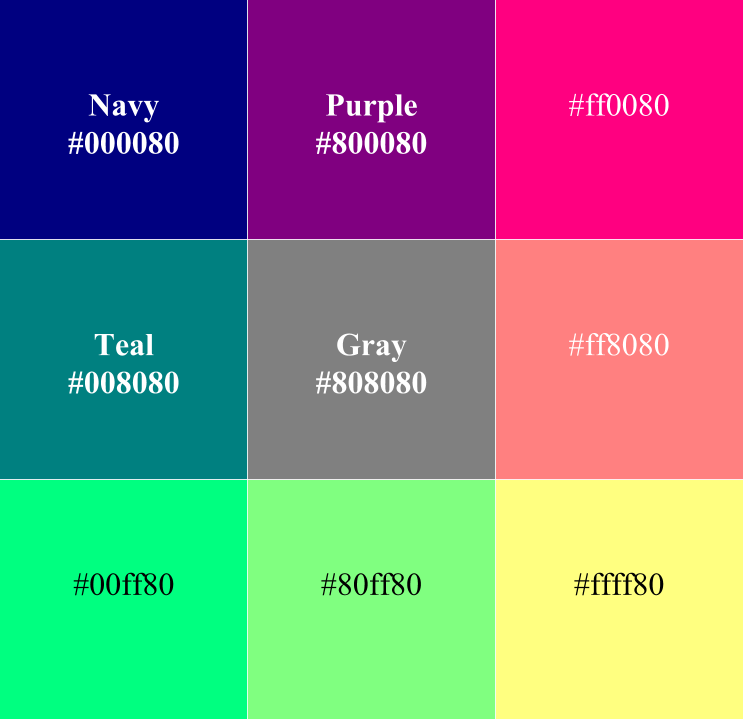
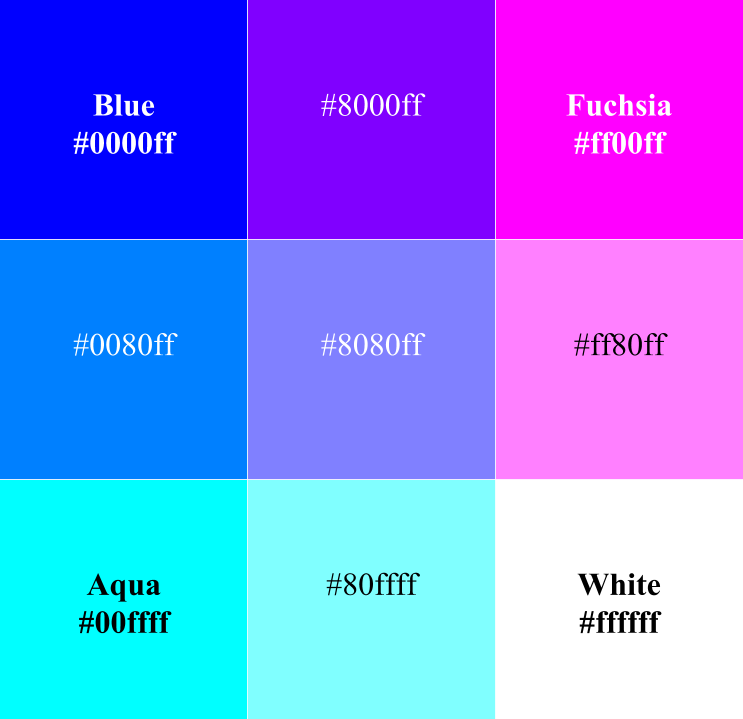

Ternary (Base 3) Color Gamut
A ternary (base 3) color gamut allows for three possible levels of each color in RGB: off, half intensity, or full intensity. This allows for a complete palette of 33, or 27 colors.
Over half of these colors were specified as definitions in the W3C's recommendations in HTML 4.01; these colors in the images below are distinguished with bold text and color names. These names were taken from the HTML 4.01 definitions.
| Intensity | RGB Decimal | Hexadecimal |
|---|---|---|
| 0 (off) | 0 | 00 |
| 1 | 128 | 80 |
| 2 (full) | 255 | ff |



Next--the base four color gamut
Reference
World Wide Web Consortium. (1999). Basic HTML data types. In HTML 4.01 Specification. Retrieved from https://www.w3.org/TR/REC-html40/types.html#h-6.5